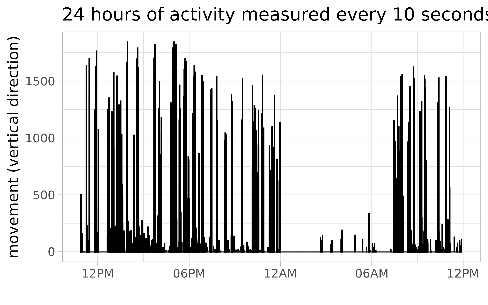
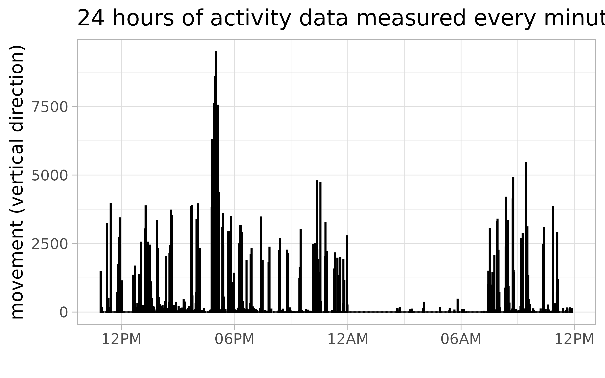
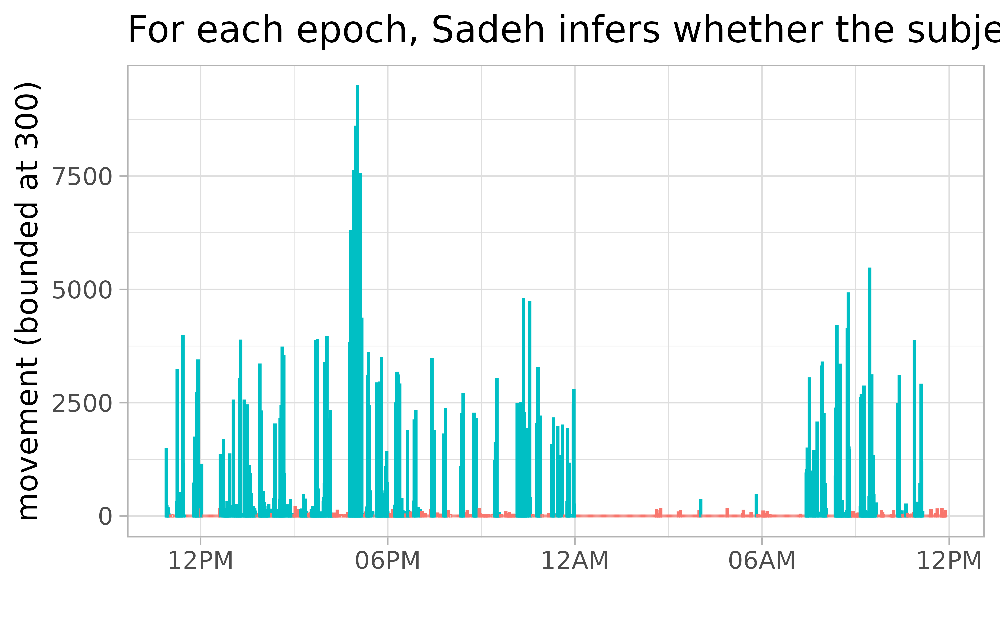
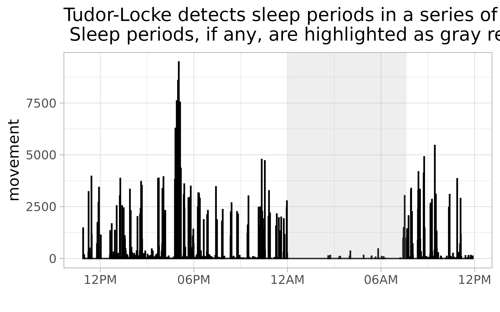

The actigraph.sleepr package implements three sleep detection algorithms: Sadeh (Sadeh, Sharkey, and Carskadon 1994), Cole-Kripke (Cole et al. 1992) and Tudor-Locke (Tudor-Locke et al. 2014).For illustration let’s use one day of sample data recorded by a GT3X+ monitor.
file_10s <- system.file(
"extdata", "GT3XPlus-RawData-Day01.agd",
package = "actigraph.sleepr"
)An AGD file is an SQLite database file exported by an ActiGraph device, which contains five tables: settings, data, sleep, awakenings and filters. The sleep and awakenings tables are empty unless the ActiLife tool has been used to analyze the activity counts to detect sleep. See the ActiLife 6 User manual.
We can load all five tables as a list using the read_agd_raw function.
# UTC (Coordinated Universal Time) is the default time zone
agdb_10s_raw <- read_agd_raw(file_10s, tz = "UTC")
names(agdb_10s_raw)
#> [1] "data" "sleep" "filters" "settings" "awakenings"Alternatively, we can use the read_agd function to get the raw activity measurements in a more convenient format: a dplyr data frame (a tibble) of timestamped activity counts, whose attributes are the device settings. However, further manipulations of the tibble using the dplyr verbs (e.g., mutate, inner_join) might drop these non-standard attributes, i.e., the attributes are not always inherited.
agdb_10s <- read_agd(file_10s, tz = "UTC")
attributes(agdb_10s)[10:12]
#> $devicename
#> [1] "GT3XPlus"
#>
#> $deviceserial
#> [1] "NEO1DXXXXXXXX"
#>
#> $deviceversion
#> [1] "2.5.0"Since the data is stored in a tibble, we can use the dplyr verbs (mutate, select, filter, summarise, group_by, arrange) to manipulate the data. For example, let’s compute the magnitude of the three-axis counts (axis1 - vertical, axis2 - horizontal, axis3 - lateral).
agdb_10s <- agdb_10s %>%
select(timestamp, starts_with("axis")) %>%
mutate(magnitude = sqrt(axis1^2 + axis2^2 + axis3^2))
agdb_10s
#> # A tibble: 8,999 x 5
#> timestamp axis1 axis2 axis3 magnitude
#> <dttm> <int> <int> <int> <dbl>
#> 1 2012-06-27 10:54:00 377 397 413 686.
#> 2 2012-06-27 10:54:10 465 816 1225 1544.
#> 3 2012-06-27 10:54:20 505 444 713 980.
#> 4 2012-06-27 10:54:30 73 91 106 158.
#> 5 2012-06-27 10:54:40 45 43 115 131.
#> 6 2012-06-27 10:54:50 0 0 0 0
#> 7 2012-06-27 10:55:00 0 0 0 0
#> 8 2012-06-27 10:55:10 207 218 270 404.
#> 9 2012-06-27 10:55:20 0 0 0 0
#> 10 2012-06-27 10:55:30 0 0 0 0
#> # … with 8,989 more rowsThe Sadeh and Cole-Kripke algorithms for converting activity measurements into asleep/awake indicators were developed for 60s epochs. If the data is in smaller epochs, we need to collapse or aggregate the epochs. The example data is in 10s epochs.
plot_activity(agdb_10s, axis1) +
labs(
x = "",
y = "movement (vertical direction)",
title = "24 hours of activity measured every 10 seconds"
) +
scale_x_datetime(date_labels = "%I%p")
So we aggregate the epochs from 10s to 60s by adding the counts for the six consecutive 10s epochs that fall into the same 60s epoch.
# Collapse epochs from 10 sec to 60 sec by summing counts
agdb_60s <- agdb_10s %>% collapse_epochs(60)
agdb_60s
#> # A tibble: 1,500 x 4
#> timestamp axis1 axis2 axis3
#> <dttm> <int> <int> <int>
#> 1 2012-06-27 10:54:00 1465 1791 2572
#> 2 2012-06-27 10:55:00 207 218 270
#> 3 2012-06-27 10:56:00 169 257 270
#> 4 2012-06-27 10:57:00 0 0 0
#> 5 2012-06-27 10:58:00 157 174 248
#> 6 2012-06-27 10:59:00 23 23 279
#> 7 2012-06-27 11:00:00 0 0 0
#> 8 2012-06-27 11:01:00 0 0 0
#> 9 2012-06-27 11:02:00 0 0 0
#> 10 2012-06-27 11:03:00 0 0 0
#> # … with 1,490 more rows
plot_activity(agdb_60s, axis1) +
labs(
x = "",
y = "movement (vertical direction)",
title = "24 hours of activity data measured every minute"
) +
scale_x_datetime(date_labels = "%I%p")
Integration nicely emphasizes a peak of activity just before 6pm.
With a few lines of code, we can load each AGD file in a directory, collapse from 10s to 60s and save the integrated activity data.
library("purrr")
# Construct a path to the directory which contains the raw AGD files
path <- system.file("extdata", package = "actigraph.sleepr")
list.files(path, pattern = "*.agd", full.names = TRUE) %>%
map_dfr(
~ read_agd(.) %>% collapse_epochs(60),
.id = ".filename"
)
#> # A tibble: 2,940 x 10
#> .filename timestamp axis1 axis2 axis3 steps inclineoff
#> <chr> <dttm> <int> <int> <int> <int> <int>
#> 1 1 2012-04-04 13:29:00 600 1025 891 5 0
#> 2 1 2012-04-04 13:30:00 88 367 74 2 33
#> 3 1 2012-04-04 13:31:00 493 646 622 4 33
#> 4 1 2012-04-04 13:32:00 358 284 174 1 14
#> 5 1 2012-04-04 13:33:00 290 341 77 5 30
#> 6 1 2012-04-04 13:34:00 57 166 23 6 32
#> 7 1 2012-04-04 13:35:00 158 240 40 9 46
#> 8 1 2012-04-04 13:36:00 68 214 102 2 41
#> 9 1 2012-04-04 13:37:00 1500 1562 1252 12 11
#> 10 1 2012-04-04 13:38:00 165 296 59 4 4
#> # … with 2,930 more rows, and 3 more variables: inclinestanding <int>,
#> # inclinesitting <int>, inclinelying <int>The Sadeh sleep scoring algorithm is primarily used for younger adolescents as the supporting research was performed on children and young adults. It requires 60s epochs and uses an 11-minute window that includes the five previous and five future epochs. The apply_sadeh function implements the algorithm as described in the ActiGraph user manual.
agdb_sadeh <- agdb_60s %>% apply_sadeh()Here are the details. The Sadeh algorithm uses the y-axis (axis 1) counts; epoch counts over 300 are set to 300. The sleep index (SI) is defined as
SI = 7.601 - (0.065 * AVG) - (1.08 * NATS) - (0.056 * SD) - (0.703 * LG)where at epoch t:
The time series of activity counts is padded with zeros as necessary, at the beginning and at the end, to compute the three functions AVG, SD, NATS within a rolling window. Finally, the sleep state is awake (W) if the sleep index SI is greater than -4; otherwise the sleep state is asleep (S).
plot_activity(agdb_sadeh, axis1, color = "sleep") +
labs(
x = "",
y = "movement (bounded at 300)",
title = paste(
"For each epoch, Sadeh infers whether",
"the subject is asleep (red) or awake (blue)"
)
) +
scale_x_datetime(date_labels = "%I%p") +
guides(color = FALSE, fill = FALSE)
The Cole-Kripke sleep scoring algorithm is primarily used for adult populations as the supporting research was performed on subjects ranging from 35 to 65 years of age. Like the Sadeh algorithm, it requires 60s epochs and uses a 7-minute window that includes the four previous and two future epochs. The apply_cole_kripke function implements the algorithm as described in the ActiGraph user manual.
agdb_colekripke <- agdb_60s %>% apply_cole_kripke()Here are the details. The Cole-Kripke algorithm uses the y-axis (axis 1) counts; first epoch counts are divided by 100 and afterwards any scaled counts over 300 are set to 300. The sleep index (SI) is defined as
.001 * (106 * Epoch_prev4 + 54 * Epoch_prev3 + 58 * Epoch_prev2 + 76 * Epoch_prev1 +
230 * Epoch +
74 * Epoch_next1 + 67 * Epoch_next1)where at epoch t:
The time series of activity counts is padded with zeros as necessary, at the beginning and at the end. Finally, the sleep state is awake (W) if the sleep index SI is less than 1; otherwise the sleep state is asleep (S).
plot_activity(agdb_colekripke, axis1, color = "sleep") +
labs(
x = "",
y = "movement (bounded at 300)",
title = paste(
"For each epoch, Cole-Kripke infers whether",
"the subject is asleep (red) or awake (blue)"
)
) +
scale_x_datetime(date_labels = "%I%p") +
guides(color = FALSE, fill = FALSE)What is the agreement between the Sadeh and Cole-Kripke asleep/awake algorithms, on the example dataset?
table(agdb_sadeh$sleep, agdb_colekripke$sleep)
#>
#> S W
#> S 881 56
#> W 114 449Once each one-minute epoch is labeled as asleep (S) or awake (W), we can use the Tudor-Locke algorithm to detect periods of time in bed and, for each period, to compute sleep quality metrics such as total minutes in bed, total sleep time, number and average length of awakenings, movement and fragmentation indices
The Tudor-Locke algorithm has several parameters:
Bedtime is (the first minute of) n_bedtime_start consecutive epochs/minutes labeled 0. Similarly, wake time is (the first minute of) of n_wake_time_end consecutive epochs/minutes labeled 1, after a period of sleep. The time block between bedtime and wake time is one sleep period, if the time elapsed is at least min_sleep_period minutes. There can be multiple sleep periods in 24 hours but a sleep period cannot be longer than max_sleep_period minutes.
periods_sleep <- agdb_sadeh %>% apply_tudor_locke()
periods_sleep
#> in_bed_time out_bed_time onset latency
#> 1 2012-06-28 00:03:00 2012-06-28 07:38:00 2012-06-28 00:03:00 0
#> efficiency duration activity_counts nonzero_epochs total_sleep_time
#> 1 97.14286 455 9126 27 442
#> wake_after_onset nb_awakenings ave_awakening movement_index
#> 1 13 4 3.25 5.934066
#> fragmentation_index sleep_fragmentation_index
#> 1 40 45.93407For each sleep period, the Tudor-Locke algorithm computes several sleep quality measures:
Sleep (or any other type of) periods in a time series can be highlighted as rectangles.
plot_activity_period(
agdb_60s, periods_sleep, axis1,
in_bed_time, out_bed_time,
fill = "#AAAAAA"
) +
scale_x_datetime(date_labels = "%I%p") +
labs(
x = "",
y = "movement",
title = paste(
"Tudor-Locke detects sleep periods in a series of",
"sleep-scored epochs (Ws and Ss)\n",
"Sleep periods, if any, are highlighted as gray rectangles"
)
)
Let’s find the awake periods, which are the complement of the sleep periods.
periods_awake <- complement_periods(
periods_sleep, agdb_sadeh,
in_bed_time, out_bed_time
)
periods_awake
#> # A tibble: 2 x 3
#> period_start period_end length
#> <dttm> <dttm> <int>
#> 1 2012-06-27 10:54:00 2012-06-28 00:02:00 789
#> 2 2012-06-28 07:39:00 2012-06-28 11:53:00 255Let’s combine the epochs and the awake periods. Then we can easily slice the time series by sleep/non-sleep periods.
# Let's label the epochs with a `period_id`, which indicates the awake period
# that each epoch falls in. The ids are consecutive integers starting from 1.
# If the epoch is outside an awake period, then `period_id` is NA.
agdb_awake <- combine_epochs_periods(
agdb_sadeh, periods_awake,
period_start, period_end
)
agdb_awake
#> # A tibble: 1,500 x 7
#> timestamp axis1 axis2 axis3 count sleep period_id
#> <dttm> <int> <int> <int> <dbl> <chr> <int>
#> 1 2012-06-27 10:54:00 1465 1791 2572 300 W 1
#> 2 2012-06-27 10:55:00 207 218 270 207 W 1
#> 3 2012-06-27 10:56:00 169 257 270 169 W 1
#> 4 2012-06-27 10:57:00 0 0 0 0 W 1
#> 5 2012-06-27 10:58:00 157 174 248 157 W 1
#> 6 2012-06-27 10:59:00 23 23 279 23 W 1
#> 7 2012-06-27 11:00:00 0 0 0 0 S 1
#> 8 2012-06-27 11:01:00 0 0 0 0 S 1
#> 9 2012-06-27 11:02:00 0 0 0 0 S 1
#> 10 2012-06-27 11:03:00 0 0 0 0 S 1
#> # … with 1,490 more rows
agdb_awake %>% count(period_id)
#> # A tibble: 3 x 2
#> period_id n
#> <int> <int>
#> 1 1 789
#> 2 2 255
#> 3 NA 456Sadeh, Avi, Katherine M Sharkey, and Mary A Carskadon. 1994. “Activity Based Sleep-Wake Identification: An Empirical Test of Methodological Issues.” Sleep 17 (3): 201–7.
Cole, Roger J, Daniel F Kripke, William Gruen, Daniel J Mullaney, and J Christian Gillin. 1992. “Automatic Sleep/Wake Identification from Wrist Activity.” Sleep 15 (5): 461–69.
Tudor-Locke, Catrine, Tiago V. Barreira, John M. Schuna, Emily F. Mire, and Peter T. Katzmarzyk. 2014. “Fully Automated Waist-Worn Accelerometer Algorithm for Detecting Children’s Sleep-Period Time Separate from 24-H Physical Activity or Sedentary Behaviors.” Applied Physiology, Nutrition, and Metabolism 39 (1): 53–57.